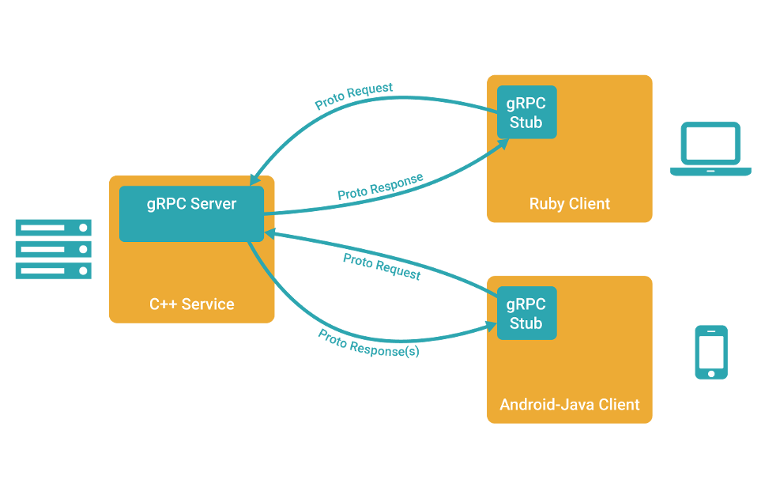

4.1 gRPC及相關介紹
專案地址：https://github.com/EDDYCJY/go-grpc-example
作為開篇章，將會介紹 gRPC 相關的一些知識。簡單來講 gRPC 是一個 基於 HTTP/2 協議設計的 RPC 框架，它採用了 Protobuf 作為 IDL
你是否有過疑惑，它們都是些什麼？本文將會介紹一些常用的知識和概念，更詳細的會給出手冊地址去深入
一、RPC
什麼是 RPC
RPC 代指遠端過程呼叫（Remote Procedure Call），它的呼叫包含了傳輸協議和編碼（物件序列號）協議等等。允許運行於一臺計算機的程式呼叫另一臺計算機的子程式，而開發人員無需額外地為這個互動作用程式設計
實際場景：
有兩臺伺服器，分別是A、B。在 A 上的應用 C 想要呼叫 B 伺服器上的應用 D，它們可以直接本地呼叫嗎？
答案是不能的，但走 RPC 的話，十分方便。因此常有人稱使用 RPC，就跟本地呼叫一個函式一樣簡單
RPC 框架
我認為，一個完整的 RPC 框架，應包含負載均衡、服務註冊和發現、服務治理等功能，並具有可拓展性便於流量監控系統等接入
那麼它才算完整的，當然了。有些較單一的 RPC 框架，透過組合多元件也能達到這個標準
你認為呢？
常見 RPC 框架
比較一下
| \ | 跨語言 | 多 IDL | 服務治理 | 註冊中心 | 服務管理 |
|---|---|---|---|---|---|
| gRPC | √ | × | × | × | × |
| Thrift | √ | × | × | × | × |
| Rpcx | × | √ | √ | √ | √ |
| Dubbo | × | √ | √ | √ | √ |
為什麼要 RPC
簡單、通用、安全、效率
RPC 可以基於 HTTP 嗎
RPC 是代指遠端過程呼叫，是可以基於 HTTP 協議的
肯定會有人說效率優勢，我可以告訴你，那是基於 HTTP/1.1 來講的，HTTP/2 優化了許多問題（當然也存在新的問題），所以你看到了本文的主題 gRPC
二、Protobuf
介紹
Protocol Buffers 是一種與語言、平臺無關，可擴充套件的序列化結構化資料的方法，常用於通訊協議，資料儲存等等。相較於 JSON、XML，它更小、更快、更簡單，因此也更受開發人員的青眯
語法
syntax = "proto3";
service SearchService {
rpc Search (SearchRequest) returns (SearchResponse);
}
message SearchRequest {
string query = 1;
int32 page_number = 2;
int32 result_per_page = 3;
}
message SearchResponse {
...
}
1、第一行（非空的非註釋行）宣告使用 proto3 語法。如果不宣告，將預設使用 proto2 語法。同時我建議用 v2 還是 v3，都應當宣告其使用的版本
2、定義 SearchService RPC 服務，其包含 RPC 方法 Search，入參為 SearchRequest 訊息，出參為 SearchResponse 訊息
3、定義 SearchRequest、SearchResponse 訊息，前者定義了三個欄位，每一個欄位包含三個屬性：型別、欄位名稱、欄位編號
4、Protobuf 編譯器會根據選擇的語言不同，生成相應語言的 Service Interface Code 和 Stubs
最後，這裡只是簡單的語法介紹，詳細的請右拐 Language Guide (proto3)
資料型別
| .proto Type | C++ Type | Java Type | Go Type | PHP Type |
|---|---|---|---|---|
| double | double | double | float64 | float |
| float | float | float | float32 | float |
| int32 | int32 | int | int32 | integer |
| int64 | int64 | long | int64 | integer/string |
| uint32 | uint32 | int | uint32 | integer |
| uint64 | uint64 | long | uint64 | integer/string |
| sint32 | int32 | int | int32 | integer |
| sint64 | int64 | long | int64 | integer/string |
| fixed32 | uint32 | int | uint32 | integer |
| fixed64 | uint64 | long | uint64 | integer/string |
| sfixed32 | int32 | int | int32 | integer |
| sfixed64 | int64 | long | int64 | integer/string |
| bool | bool | boolean | bool | boolean |
| string | string | String | string | string |
| bytes | string | ByteString | []byte | string |
v2 和 v3 主要區別
- 刪除原始值欄位的欄位存在邏輯
- 刪除 required 欄位
- 刪除 optional 欄位，預設就是
- 刪除 default 欄位
- 刪除擴充套件特性，新增 Any 型別來替代它
- 刪除 unknown 欄位的支援
- 新增 JSON Mapping
- 新增 Map 型別的支援
- 修復 enum 的 unknown 型別
- repeated 預設使用 packed 編碼
- 引入了新的語言實作（C＃，JavaScript，Ruby，Objective-C）
以上是日常涉及的常見功能，如果還想詳細瞭解可閱讀 Protobuf Version 3.0.0
相較 Protobuf，為什麼不使用XML？
- 更簡單
- 資料描述檔案只需原來的1/10至1/3
- 解析速度是原來的20倍至100倍
- 減少了二義性
- 生成了更易使用的資料訪問類
三、gRPC
介紹
gRPC 是一個高效能、開源和通用的 RPC 框架，面向移動和 HTTP/2 設計
多語言
- C++
- C#
- Dart
- Go
- Java
- Node.js
- Objective-C
- PHP
- Python
- Ruby
特點
1、HTTP/2
2、Protobuf
3、客戶端、服務端基於同一份 IDL
4、行動網路的良好支援
5、支援多語言
概覽

講解
1、客戶端（gRPC Sub）呼叫 A 方法，發起 RPC 呼叫
2、對請求資訊使用 Protobuf 進行物件序列化壓縮（IDL）
3、服務端（gRPC Server）接收到請求後，解碼請求體，進行業務邏輯處理並返回
4、對響應結果使用 Protobuf 進行物件序列化壓縮（IDL）
5、客戶端接受到服務端響應，解碼請求體。回撥被呼叫的 A 方法，喚醒正在等待響應（阻塞）的客戶端呼叫並返回響應結果
示例
在這一小節，將簡單的給大家展示 gRPC 的客戶端和服務端的示例程式碼，希望大家先有一個基礎的印象，將會在下一章節詳細介紹 🤔
構建和啟動服務端
lis, err := net.Listen("tcp", fmt.Sprintf(":%d", *port))
if err != nil {
log.Fatalf("failed to listen: %v", err)
}
grpcServer := grpc.NewServer()
...
pb.RegisterSearchServer(grpcServer, &SearchServer{})
grpcServer.Serve(lis)
1、監聽指定 TCP 埠，用於接受客戶端請求
2、建立 gRPC Server 的例項物件
3、gRPC Server 內部服務和路由的註冊
4、Serve() 呼叫伺服器以執行阻塞等待，直到程序被終止或被 Stop() 呼叫
建立客戶端
var opts []grpc.DialOption
...
conn, err := grpc.Dial(*serverAddr, opts...)
if err != nil {
log.Fatalf("fail to dial: %v", err)
}
defer conn.Close()
client := pb.NewSearchClient(conn)
...
1、建立 gRPC Channel 與 gRPC Server 進行通訊（需伺服器地址和埠作為引數）
2、設定 DialOptions 憑證（例如，TLS，GCE憑據，JWT憑證）
3、建立 Search Client Stub
4、呼叫對應的服務方法
思考題
1、什麼場景下不適合使用 Protobuf，而適合使用 JSON、XML？
2、Protobuf 一節中提到的 packed 編碼，是什麼？
總結
在開篇內容中，我利用了儘量簡短的描述給你介紹了接下來所必須、必要的知識點 希望你能夠有所收穫，建議能到我給的參考資料處進行深入學習，是最好的了